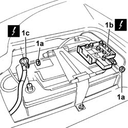
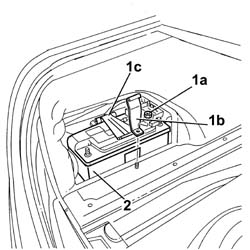

5530B10 BATTERY - R.R.
- Path
- Procedures > 55 ELECTRICAL EQUIPMENT > 5530 CURRENT GENERATION > 5530B BATTERY AND LEADS > 5530B10 BATTERY - R.R.
- Kind
- repair procedure (removal / refitting; the operation number is the code)
- Applies to
- all engines; all production periods
- Interactive page
- https://sloeber94.github.io/elrnDB-lThss/en/#/79490
Applies to: engines: 2.0 TB, 2.4 20V, 3.0 V6, 2.4 JTD 10V; all production periods
 Removing
Removing
 Refitting
Refitting- Turn the ignition key to the OFF position.
- Open the boot and close the lock hook manually until it is fully retracted.
- Reopen the lock hook using the key in the lock barrel in the rear number plate holder; the lock should be ready to be locked completely (mechanical travel + electrical travel).
- Remove the battery protective cover.
1. Undo the fixing nuts (1a) and disconnect the positive terminal complete with plate (1b) and the negative terminal (1c).
 | Description | Connector |
|---|---|---|
1b | Battery (+) | A001A |
| Description | Connector |
|---|---|---|
1c | Battery (-) | A001B |

Applies to: engines: 2.0 TB, 2.4 20V, 3.0 V6, 2.4 JTD 10V; all production periods
1. Undo the fixing nut (1a) and remove the battery retaining bracket (1b) and the mounting bracket (1c).
2. Remove the battery from its housing and rest it on a suitable support.

Applies to: engines: 2.0 TB, 2.4 20V, 3.0 V6, 2.4 JTD 10V; all production periods
Refitting
Removing- Place the battery in its housing.
- Fit the battery retaining bracket complete with support and tighten the fixing nut.
- Connect the positive and negative battery terminals and secure them to the poles using the nuts.
- Fit the battery protective cover.
- Measure the absorption with no load using the diagnostic equipment.
- Carry out the initialization of the central locking control unit using the key and closing and opening the door.
- Start up the engine and switch on the air conditioning so that the engine management control unit detects the presence of the air conditioner.
- Calibrate the ESP steering angle sensor by accelerating, in a straight line, for at least 10 metres and checking that the yellow "ESP fault" warning light goes out.
- Using the diagnostic equipment, delete the errors memory and check that it has been cancelled at the NPB (Parking Brake Node), NCC (Cruise Control Node), NFR (Braking Node) and NIT (Info Telematic node) control units.
Applies to: engines: 3.2 V6; all production periods
- Operation not available
Applies to: engines: 2.4 JTD 20V; all production periods
- Operation not available
Topics that link to this page (12)
- C34 NO DATA SHOWN ON THE DISPLAY
- C37 THE VEHICLE DOES NOT START WITH THE LEVER IN POSITION P OR N
- 1048A14 air cleaner filtering element - replace.
- 1056B17 THROTTLE CASING WITH D.V.L. - R.R.
- 1056B50 Coolant temperature SENSOR - R.R.
- 1056B51 CAM ANGLE SENSOR - R.R.
- 1056B62 FUEL PIPE ASSEMBLY, LEFT AND RIGHT, COMPLETE WITH INJECTORS - R.R.
- 1080E26 FUEL VAPOUR CUT OUT VALVE FROM FILTER - R.R.
- 1084A40 ENGINE OIL LEVEL SENSOR - R.R.
- 2135B72 ELECTRONIC AUTOMATIC GEARBOX INPUT RPM SENSOR - R.R.
- 2135B74 ELECTRONIC AUTOMATIC GEARBOX OUTPUT RPM SENSOR - R.R.
- 5530B18 ELECTROLYTE - Check density and top up, if necessary